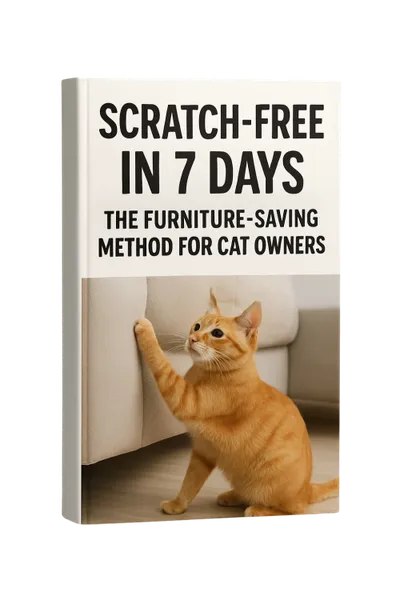
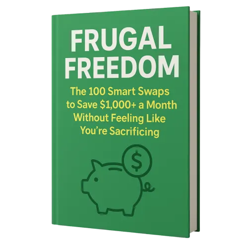
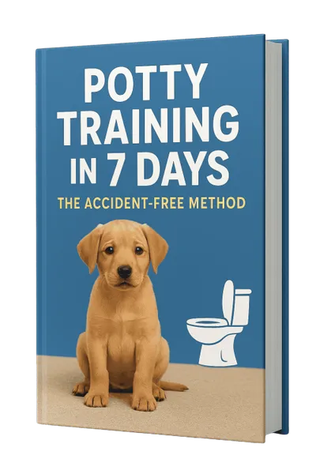

The First-Time Chicken Keeper's | Earn 75% Commissions
Product profile · Marketplace data 2026-10-14 · Sales-page research 2026-10-14 · Categories: Animals & Pets
- The First-Time Chicken Keeper's | Earn 75% Commissions is a e-books in Animals & Pets sold through the Digistore24 marketplace by vendor darrelltee, listed since 2025-10-05.
- List price $164.46 (single payment) — checkout, delivery and refunds are handled by Digistore24 itself, not the vendor.
- Buyer protection: the sales page advertises a money-back guarantee — confirm the exact window at checkout.
Interested in The First-Time Chicken Keeper's | Earn 75% Commissions? The current price, bonuses and guarantee terms live on the vendor's official page:
Check the official sales page
Affiliate link — we may earn a commission at no extra cost to you.

Marketplace record
| Product type | E-books |
|---|---|
| Price | $164.46 (Single payment) |
| Refund window | Per the vendor's sales page — check the official page before buying |
| Vendor | darrelltee (listed since 2025-10-05) |
Vendor's marketplace description
Tap into the booming homesteading and self-sufficiency niche with a high-converting offer for aspiring backyard farmers. The First-Time Chicken Keeper's Checklist is the ultimate step-by-step guide to starting a backyard flock correctly and avoiding costly beginner mistakes, and it comes with a generous 75% commission . This offer resonates powerfully because it solves a very specific, common fear: the anxiety of starting a new hobby the wrong way and wasting money or harming animals. The creator's relatable story of her own early failures builds immediate trust. It provides clear, actionable value that eliminates overwhelm for complete beginners. Why This Offer is a Reliable Earner for Affiliates: High 75% Commission: Earn top-tier payouts in the evergreen homesteading and DIY niche. Perfect for a Passionate Niche: Targets a dedicated audience of preppers, homesteaders, gardeners, and families seeking self-sufficiency and sustainable living. Solves a Clear Pain Point: The "avoid costly mistakes" angle is a powerful motivator that directly addresses the biggest fear of every beginner. High Perceived Value: The comprehensive main guide plus four highly practical bonuses (shopping lists, health guide) creates a must-have bundle for anyone considering chickens. Strong Guarantee: A 60-day money-back guarantee makes it a risk-free decision for your audience. Promote this to your audience interested in homesteading, backyard farming, sustainable living, DIY projects, and rural/off-grid lifestyles. The sales page effectively builds trust and showcases the tangible, mistake-saving benefits—your promotion will connect a passionate audience with the exact guide they need.
From the vendor's sales page
Page title: The First-Time Chicken Keeper's Checklist: Everything You Need to Start Your Backyard Flock the Right Way & Avoid Costly Mistakes
Meta description: The complete beginner
Headline
Start Your Backyard Flock Right — Without the Costly Beginner Mistakes
Section headlines
- Real Results from Real Beginners
- Are You Making These Costly Beginner Mistakes?
- From Overwhelmed Beginner to Confident Chicken Keeper
- Introducing The First-Time Chicken Keeper's Checklist
- Six Modules That Cover Everything
- Here's Everything You Get Today
- Get the Complete System for Just $27
- My Iron-Clad "Satisfaction or Full Refund" Promise
- Common Questions Answered
- Two Paths Forward
Opening copy
The complete step-by-step checklist that shows first-time chicken keepers exactly what to buy, how to set up, and what to avoid — so you get healthy hens and fresh eggs from day one.
What Readers Are Saying Real Results from Real Beginners ★★★★★ "This guide saved me from making so many expensive mistakes! I followed the checklist exactly and my chickens have been healthy and happy from day one. The shopping list alone was worth the price."
— Sarah M., First-Time Chicken Owner ★★★★★ "Finally, a chicken guide that doesn't assume you already know everything! The step-by-step approach made me feel confident instead of overwhelmed. My neighbors can't believe this is my first flock."
Prices mentioned on the page: $147 · $27 · $120 · $200 · $400 · $37 · $29 · $23 · $11 · $100 · $47
Guarantee language found: “60” — always confirm the current terms on the official page before relying on it.
CTA buttons: “Get 72% Off →” · “Get Instant Access — Only $27” · “Claim My 72% Discount Now →” · “Get Access →”
Research method: raw HTML fetch · 1622 words on page · quality: rich · researched 2026-10-14. Full research file (MD) ↗
Usage — as described by the vendor
The complete step-by-step checklist that shows first-time chicken keepers exactly what to buy, how to set up, and what to avoid — so you get healthy hens and fresh eggs from day one.
"Finally, a chicken guide that doesn't assume you already know everything! The step-by-step approach made me feel confident instead of overwhelmed. My neighbors can't believe this is my first flock."
✗ No clear, step-by-step plan that works for complete beginners
Good to know
- Vendor's sales page notes (verbatim, not verified by us): “Disclaimer: This is an educational product. Results depend on your effort, local conditions, climate, and consistency in applying the methods taught. We make no guarantees about animal health outcomes, egg production, or specific results. Always consult local veterinarians for health concerns. The 60-day refund policy applies to the purchase price only.”
What is The First-Time Chicken Keeper's | Earn 75% Commissions?
The First-Time Chicken Keeper's | Earn 75% Commissions is a e-books in the Animals & Pets category of the Digistore24 marketplace, published by vendor darrelltee and on sale since 2025-10-05. The vendor describes it as follows: "Tap into the booming homesteading and self-sufficiency niche with a high-converting offer for aspiring backyard farmers. The First-Time Chicken Keeper's Checklist is the ultimate step-by-step guide to starting a backyard flock correctly and avoiding costly beg" (vendor's marketplace description, lightly truncated).
The First-Time Chicken Keeper's | Earn 75% Commissions pricing: what you will pay
The marketplace lists The First-Time Chicken Keeper's | Earn 75% Commissions at $164.46 (single payment). Digistore24 adds any tax your country requires at checkout, where you see the final amount before paying. The sales page itself mentions: $147, $27, $120, $200 (vendor claims — the checkout total is the binding one). There is no separate marketplace-side fee; vendors may offer their own upsells after checkout.
The First-Time Chicken Keeper's | Earn 75% Commissions refund policy and money-back guarantee
The sales page advertises: "60" (vendor claim). Refunds for Digistore24 purchases are processed through the platform: request via the support link in your order email, within the vendor's guarantee window shown at checkout. Practical advice: decide inside the window — if the product underdelivers, refund it rather than letting it ride.
Details and mechanics: how Digistore24 refunds work.
Who is The First-Time Chicken Keeper's | Earn 75% Commissions for?
Based on its Animals & Pets classification and single payment pricing, The First-Time Chicken Keeper's | Earn 75% Commissions targets buyers looking for animals & pets solutions who have budgeted for a premium, high-ticket purchase. The honest test is not the category but your own situation: will you realistically use it within the refund window? If yes, the price is an investment; if not, it is clutter — regardless of quality.
Is The First-Time Chicken Keeper's | Earn 75% Commissions legit? What to verify before buying
We do not rate legitimacy — nobody can, without using the product. What you can verify, all on this page: the vendor's marketplace history (listed since 2025-10-05), the verbatim sales-page extracts below (labeled vendor claims — their marketing, not our endorsement), the guarantee terms at checkout, and the delivery method. Red flags to check on any offer: pressure countdowns paired with vague refund terms, testimonials without dates, and vendor sites that hide pricing until checkout.
How do you access The First-Time Chicken Keeper's | Earn 75% Commissions after buying?
Checkout runs on Digistore24. After payment: E-books on Digistore24 are delivered as a digital download (usually PDF/EPUB): right after checkout you get a download link or member-area access, and can read on any device. Keep your order email — it is your key to the e-books, your refund requests and Digistore24 buyer support.
The First-Time Chicken Keeper's | Earn 75% Commissions reviews: how to research it properly
Third-party "reviews" of marketplace products are mostly affiliate content — including pages like this one, which earns a commission on purchases. Treat every review (ours included) as a starting point, then verify against primary sources: the vendor's own sales page, the Digistore24 refund policy, and — for animals & pets — independent communities outside the affiliate ecosystem. On this page the sales-page extracts below are quoted verbatim, so you can judge the vendor's claims without clicking away.
How to buy The First-Time Chicken Keeper's | Earn 75% Commissions safely
- Open the official sales page and read the full offer.
- Confirm the final price and the refund window on the Digistore24 checkout page — that page is binding, not any review.
- Pay inside the Digistore24 checkout (never by bank transfer or off-platform links).
- Save the order confirmation email; note the refund deadline in your calendar.
- Evaluate promptly. Digistore24 buyer support can help if the vendor is unresponsive.
Full research archive for this product (Markdown: complete marketplace record + verbatim sales-page extracts): The First-Time Chicken Keeper's | Earn 75% Commissions — full data archive (Markdown file: 54272-the-first-time-chicken-keeper-s-earn-75-commissions.md).
- Listed price & billing — source: official Digistore24 marketplace API, snapshot 2026-10-14. The checkout page is always the binding source for the current price.
- Sales-page quotes & headline — source: https://www.betterdailyguide.site/ds24/the-first-time-chicken-keepers-checklist, fetched 2026-10-14 (method: raw HTML). Verify: open the official page.
- Guarantee / refund — set by the vendor; confirm on the sales page at purchase time.
- Not verified by us: product quality, outcomes, testimonials — no hands-on test has been performed for this listing.
Frequently asked questions about The First-Time Chicken Keeper's | Earn 75% Commissions
Answers compiled from the marketplace snapshot (2026-10-14) and vendor sales-page research (2026-10-14); vendor claims are labeled inline.
What is The First-Time Chicken Keeper's | Earn 75% Commissions?
The First-Time Chicken Keeper's | Earn 75% Commissions is a e-books sold through the Digistore24 marketplace by vendor darrelltee, listed since 2025-10-05. It is filed under Animals & Pets. Digistore24 handles checkout, delivery and refunds for this product.
How much does The First-Time Chicken Keeper's | Earn 75% Commissions cost?
The Digistore24 marketplace lists it at $164.46 (single payment). Prices are set by the vendor and can change — the marketplace record above shows the snapshot; the official sales page shows the current price.
Is there a money-back guarantee for The First-Time Chicken Keeper's | Earn 75% Commissions?
The vendor's sales page advertises: “60”. The guarantee window is set by the vendor — confirm the current terms on the official page before buying. Digistore24 handles the refund process.
Is The First-Time Chicken Keeper's | Earn 75% Commissions legit?
We don't rate legitimacy — we publish verifiable data instead: vendor darrelltee (listed on Digistore24 since 2025-10-05), listed on the marketplace since 2025-10-05, with its complete sales-page research archived on this page (vendor claims labeled as such). Read our 6-point evaluation method and judge with the facts — or join the discussion about The First-Time Chicken Keeper's | Earn 75% Commissions.
Are there alternatives to The First-Time Chicken Keeper's | Earn 75% Commissions?
Yes — the closest same-category offers are Thyrafemme Balance - New Japanese-Inspired Thyroid Offer, Pet Grooming Business Operating System, KeraFirm Pro. See the comparison table above or the full alternatives page for side-by-side marketplace numbers.
Where can I buy The First-Time Chicken Keeper's | Earn 75% Commissions safely?
Only through the official sales page linked on this site (checkout and refunds run via Digistore24). Verify the price and guarantee there before ordering. That link is an affiliate link — buying through it supports this site at no extra cost to you.
How do I get The First-Time Chicken Keeper's | Earn 75% Commissions after paying?
Checkout runs on Digistore24: after payment you receive your access or download by email and in your Digistore24 customer account. Delivery details for this product type: E-books on Digistore24 are delivered as a digital download (usually PDF/EPUB): right after checkout you get a download link or member-area access, and can read on any device. If anything fails, Digistore24 buyer support can recover your order.
All 50 buyer questions about Animals & Pets — the full category FAQ.
Discuss The First-Time Chicken Keeper's | Earn 75% Commissions on Reddit
Community threads are where real buyers compare notes. We link to communities, not to specific posts — threads move, subreddits stay:
- r/pets — community discussions that often touch animals & pets.
- Search Reddit for "The First-Time Chicken Keeper's | Earn 75% Commissions" — real-time results, we don't control them.
- Top "review" mentions this year — sort by top, filter by recency yourself.
Related shopping on Amazon
Physical products and gear commonly bought alongside The First-Time Chicken Keeper's | Earn 75% Commissions:
- Shop pet supplies on Amazon — top results, Amazon's ranking.
- Bestsellers in pet supplies — live Amazon list, we don't curate it.
Sponsored: as an Amazon Associate, DigistorePicks earns from qualifying purchases (tag adminstore05-20). Amazon sets its own prices and commissions (typically low single digits — far below Digistore24 vendors' 30–75%). We list Amazon as a convenience for physical goods; it is not an alternative to the digital product above.
Related offers in Animals & Pets

Target all the major pain points of millions of women - thyroid, fatigue, brain fog, skin & hair loss with this one-of-a-kind offer! Proven angles, multiple

The Pet Grooming Business Operating System is a practical business management framework designed specifically for pet grooming salons, mobile groomers, independ

Explosive Doctor-Endorsed Toenail Fungus Offer! High buyer intent, strong early EPCs, and proven scalability across Facebook, native, and email. Simple applicat

Tap into the passionate and ever-growing pet care market with an offer that solves one of the most common and frustrating issues for cat owners. Scratch-Free in
Other offers by darrelltee
Full catalog: darrelltee vendor hub — all listings with marketplace data.

Convert cold traffic with this powerful "lost history" wealth reprogramming system. This digital product offers a neuroscience-backed solution to eras
Capitalize on the red-hot AI and make-money-online niches with an offer that delivers immediate value. The AI Side Hustle System provides a complete blueprint f
Unlock massive earnings with a 75% commission on one of the most sought-after offers in the make-money niche. Promote "The Local Lead Generation Blueprint&

Tap into the massive personal finance niche with an offer that provides immediate, practical value. Frugal Freedom is a comprehensive guide to 100+ smart spendi
Comparing options? See The First-Time Chicken Keeper's | Earn 75% Commissions vs its closest alternatives — side-by-side marketplace numbers.
How The First-Time Chicken Keeper's | Earn 75% Commissions compares (marketplace numbers)
| Product | Type | Price | Commission | Cart conv.* | Cancel* | Earn./sale |
|---|---|---|---|---|---|---|
| The First-Time Chicken Keeper's | Earn 75% Commissions | E-books | $164.46 | 75% | — | — | $123.35 |
| Thyrafemme Balance - New Japanese-Inspired Thyroid Offer | Supplements - health | $141.34 | 65% | 3% | 11.79% | $128.36 |
| Pet Grooming Business Operating System | Downloads | $149.00 | 75% | — | — | $111.75 |
| KeraFirm Pro | Deliverable | $158.00 | 65% | — | — | $102.70 |
| Scratch-Free in 7 Days: The Cat Owner's Guide | E-books | $135.37 | 75% | — | — | $101.53 |
* Vendor-side marketplace statistics; depend on traffic quality, not a forecast. Full context: alternatives page for The First-Time Chicken Keeper's | Earn 75% Commissions.
Decision factors buyers care about
- Function: compare cart conversion and vendor track record — the table above shows both.
- Compatibility: check type and requirements (delivery format, prerequisites) on each profile.
- Maintenance: cancel rate is the refund-regret signal; access terms live on the official pages.
- After-sales: guarantee language and support — verify on official pages before paying.
These four dimensions map to the pre-purchase risk checklist on each product profile.
Similar price range in Animals & Pets

Tap into the massive and evergreen pet care niche with an offer that solves one of the most frustrating challenges for dog owners. Potty Training in 7 Days: The
Related searches
Where to check it out
Read the vendor's full sales page (current price, guarantee terms and bonuses are listed there):
View official sales page
That link is an affiliate link — if you buy through it we earn a commission from the vendor at no extra cost to you.
Sources & further information
- Official sales page (current price, guarantee, bonuses): www.betterdailyguide.site/ds24/the-first-time-chicken-keeper (affiliate link)
- Public Digistore24 product page: checkout-ds24.com/product/639587
- Full research file (Markdown, versioned): content/products/54272-the-first-time-chicken-keeper-s-earn-75-commissions.md
- Vendor's affiliate support page: www.betterdailyguide.site/ds24/the-first-time-chicken-keeper
- Marketplace category: Animals & Pets
How we evaluate products like The First-Time Chicken Keeper's | Earn 75% Commissions
Six checks, all on official marketplace numbers — earnings/sale ÷ cancel-rate skepticism × funnel fit. Read the full evaluation method · our research standards & labeling.
Questions, or own experience with The First-Time Chicken Keeper's | Earn 75% Commissions?
We publish hands-on reviews only after buying a product ourselves — but your experience helps other readers: start or join the discussion about The First-Time Chicken Keeper's | Earn 75% Commissions on GitHub. Found a wrong number? Report a correction — every page shows its data dates, and corrections are applied to the whole site.